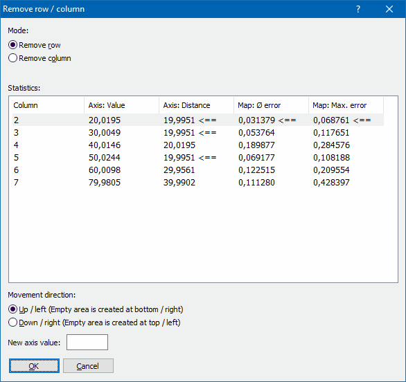

|
The Dialog Remove row / column (Menu Edit) |

  
|
|
The Dialog Remove row / column (Menu Edit) |
|
u Video |
Sometimes the range covered by the axis values isn't large enough. Modifying the outmost axis value would solve this problem, but it would also cause large-scale changes. This dialog helps you instead to identify and remove an 'unimportant' row or column.

Requirements:
| · | This dialog requires a map. |
| · | It can only be used the corresponding axis values come directly (without adding up) from the hexdump. |
Mode:
Choose whether you want to remove a row or column.
Statistics:
This table show for all rows/columns (except for the outmost ones), what would happen if you would remove it (so that these values would be calculated by linear interpolation instead). This table shows:
| · | The number of the row/column |
| · | The axis value at this position |
| · | The distance between the neighbor values |
| · | The average error1 that this would cause |
| · | The maximum error that would be caused in one cell |
1 The 'Error' is the difference between the current cell values and the value that would be calculated by linear interpolation if this row/column didn't exist.
This smallest value in each column is marked with '<=='. WinOLS automatically selects the row where the sum of the last 2 column is smallest.
Move direction:
Choose the direction in which you want to move the values after the row/column was removed. Enter a new axis values here. WinOLS will use it to extrapolate the map values from the neighbor values.
Note:
Keep in mind that the axis that you're modifying here, might also be referenced by other maps.
Shortcuts
Symbol bar:
Keyboard: Ctrl+Shift+Alt+Del